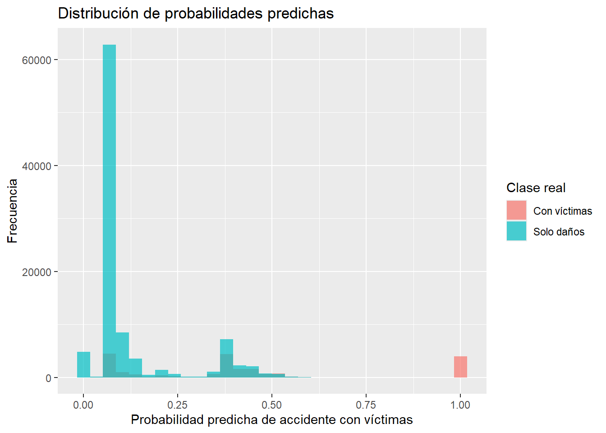

Al finalizar este capítulo, el lector será capaz de:
Explicar qué es un problema de clasificación binaria.
Comprender la idea intuitiva de la regresión logística.
Diferenciar entre probabilidad predicha y clase predicha.
Dividir una base de datos en entrenamiento y prueba.
Ajustar un modelo de regresión logística en R.
Construir una matriz de confusión.
Calcular exactitud, sensibilidad y especificidad.
Interpretar los resultados básicos de un modelo logístico.
Reconocer algunas limitaciones de la regresión logística.
4.2 Introducción
En los capítulos anteriores preparamos y exploramos una base real de accidentes de tránsito.
Ahora daremos un paso importante: construiremos nuestro primer modelo supervisado de clasificación.
El problema que vamos a estudiar es el siguiente:
¿Podemos estimar la probabilidad de que un accidente de tránsito tenga víctimas?
La variable que queremos predecir es:
accidente_con_victimas
Esta variable tiene dos categorías:
Con víctimas
Solo daños
Por lo tanto, estamos frente a un problema de clasificación binaria.
La regresión logística es uno de los modelos más utilizados para este tipo de problemas. Aunque tiene la palabra “regresión” en su nombre, se usa frecuentemente para clasificación.
4.3 Clasificación binaria
Un problema de clasificación binaria es aquel donde la variable respuesta tiene solo dos posibles clases.
Problema
Clase 1
Clase 2
Accidente de tránsito
Con víctimas
Solo daños
Diagnóstico médico
Enfermo
Sano
Crédito bancario
Incumple
No incumple
Correo electrónico
Spam
No spam
En nuestro caso, la clase de interés será:
Con víctimas
4.4 ¿Por qué no usar regresión lineal?
Si codificamos la variable respuesta como (1) para “Con víctimas” y (0) para “Solo daños”, podríamos pensar en usar regresión lineal.
Pero la regresión lineal puede producir predicciones menores que 0 o mayores que 1, y una probabilidad debe estar entre 0 y 1.
Para evitar este problema usamos la regresión logística, que transforma la salida del modelo para obtener valores entre 0 y 1.
4.5 Idea intuitiva de la regresión logística
La regresión logística no predice directamente una clase.
Primero predice una probabilidad.
Después usamos un punto de corte para convertir esa probabilidad en una clase.
Por ejemplo, si usamos un punto de corte de 0.5:
Si probabilidad >= 0.5 → Con víctimas
Si probabilidad < 0.5 → Solo daños
Esta distinción es muy importante:
La regresión logística produce probabilidades; la clasificación final depende del punto de corte elegido.
4.6 La función logística
La regresión logística utiliza una función especial llamada función logística.
Esta función tiene forma de “S” y convierte cualquier número real en un valor entre 0 y 1.
[ p = ]
donde:
[ z = _0 + _1x_1 + _2x_2 + + _px_p ]
4.7 Fundamento matemático de la regresión logística
En clasificación binaria, la variable respuesta puede representarse como:
[ Y_i =
\[\begin{cases}
1, & \text{si el accidente tiene víctimas} \\
0, & \text{si el accidente es de solo daños}
\end{cases}\]
]
La regresión logística estima la probabilidad de que (Y_i = 1) dado un conjunto de variables predictoras (X_i):
[ P(Y_i = 1 X_i) = _i ]
La probabilidad estimada se calcula mediante:
[ _i = ]
donde:
[ z_i = _0 + 1x{i1} + 2x{i2} + + px{ip} ]
La función logística garantiza que:
[ 0 _i ]
por lo tanto, (_i) puede interpretarse como una probabilidad.
4.8 Logit y razón de momios
La regresión logística también puede escribirse mediante la función logit:
[ ( ) = _0 + 1x{i1} + + px{ip} ]
La expresión:
[ ]
se conoce como momios u odds.
Cuando aplicamos la función exponencial a un coeficiente, obtenemos un odds ratio:
[ OR_j = e^{_j} ]
4.9 Regla de clasificación
Una vez estimada la probabilidad (_i), se elige un punto de corte (c).
[ _i =
\[\begin{cases}
1, & \text{si } \hat{p}_i \geq c \\
0, & \text{si } \hat{p}_i < c
\end{cases}\]
]
4.10 Algoritmo de regresión logística
Algoritmo: Regresión logística para clasificación binaria
Entrada:
- Matriz de variables predictoras X
- Variable respuesta binaria Y
- Punto de corte c
Proceso:
1. Codificar la variable respuesta como 0 y 1.
2. Estimar los coeficientes beta del modelo logístico.
3. Calcular z = beta_0 + beta_1 x_1 + ... + beta_p x_p.
4. Transformar z mediante la función logística.
5. Obtener la probabilidad estimada p.
6. Comparar p contra el punto de corte c.
7. Si p >= c, clasificar como clase positiva.
8. Si p < c, clasificar como clase negativa.
9. Comparar las clases predichas contra las clases reales.
10. Calcular matriz de confusión y métricas.
Salida:
- Probabilidades predichas
- Clases predichas
- Matriz de confusión
- Exactitud, sensibilidad y especificidad
4.11 Visualización de la función logística
Code
z <-seq(-10, 10, length.out =200)p <-1/ (1+exp(-z))datos_logistica <-data.frame(z = z, p = p)library(ggplot2)ggplot(datos_logistica, aes(x = z, y = p)) +geom_line(linewidth =1) +labs(title ="Función logística",x ="z",y ="Probabilidad" )
4.12 Cargar paquetes
Code
library(readr)library(dplyr)library(ggplot2)
Si alguno no está instalado, puedes instalarlo con:
if (exists("modelo_logistico")) {summary(modelo_logistico)}
Call:
glm(formula = victimas_binaria ~ MES + ID_HORA + DIASEMANA +
TIPACCID + CAUSAACCI, family = binomial, data = entrenamiento)
Coefficients: (1 not defined because of singularities)
Estimate Std. Error z value
(Intercept) 18.107257 101.847193 0.178
MES02 -0.045766 0.029756 -1.538
MES03 -0.032191 0.029273 -1.100
MES04 -0.002838 0.029455 -0.096
MES05 -0.015409 0.029067 -0.530
MES06 -0.054753 0.029837 -1.835
MES07 -0.076297 0.030352 -2.514
MES08 -0.094050 0.029971 -3.138
MES09 -0.077109 0.030150 -2.557
MES10 -0.154152 0.029797 -5.173
MES11 -0.106385 0.029508 -3.605
MES12 -0.111889 0.029593 -3.781
ID_HORA -0.001039 0.001025 -1.015
DIASEMANAJueves -0.248317 0.022530 -11.022
DIASEMANAlunes -0.219442 0.022072 -9.942
DIASEMANAMartes -0.266295 0.022564 -11.801
DIASEMANAMiercoles -0.297457 0.022631 -13.144
DIASEMANASabado -0.145669 0.021142 -6.890
DIASEMANAViernes -0.234956 0.021860 -10.748
TIPACCIDCertificado cero -35.365952 108.599964 -0.326
TIPACCIDColisión con animal -18.408433 101.847115 -0.181
TIPACCIDColisión con ciclista -17.466499 101.847083 -0.171
TIPACCIDColisión con ferrocarril -18.516007 101.847193 -0.182
TIPACCIDColisión con motocicleta -17.993904 101.847076 -0.177
TIPACCIDColisión con objeto fijo -19.631828 101.847078 -0.193
TIPACCIDColisión con peatón (atropellamiento) -0.014823 111.314486 0.000
TIPACCIDColisión con vehículo automotor -20.213142 101.847076 -0.198
TIPACCIDIncendio -21.789442 101.848323 -0.214
TIPACCIDOtro -19.371321 101.847096 -0.190
TIPACCIDSalida del camino -18.895003 101.847080 -0.186
TIPACCIDVolcadura -17.704426 101.847078 -0.174
CAUSAACCIConductor -0.282824 0.157369 -1.797
CAUSAACCIFalla del vehículo -0.547420 0.167821 -3.262
CAUSAACCIMala condición del camino -0.097472 0.162233 -0.601
CAUSAACCIOtra -0.093819 0.169144 -0.555
CAUSAACCIPeatón o pasajero NA NA NA
Pr(>|z|)
(Intercept) 0.858889
MES02 0.124035
MES03 0.271467
MES04 0.923240
MES05 0.596036
MES06 0.066492 .
MES07 0.011946 *
MES08 0.001701 **
MES09 0.010543 *
MES10 2.30e-07 ***
MES11 0.000312 ***
MES12 0.000156 ***
ID_HORA 0.310343
DIASEMANAJueves < 2e-16 ***
DIASEMANAlunes < 2e-16 ***
DIASEMANAMartes < 2e-16 ***
DIASEMANAMiercoles < 2e-16 ***
DIASEMANASabado 5.58e-12 ***
DIASEMANAViernes < 2e-16 ***
TIPACCIDCertificado cero 0.744687
TIPACCIDColisión con animal 0.856567
TIPACCIDColisión con ciclista 0.863833
TIPACCIDColisión con ferrocarril 0.855738
TIPACCIDColisión con motocicleta 0.859763
TIPACCIDColisión con objeto fijo 0.847149
TIPACCIDColisión con peatón (atropellamiento) 0.999894
TIPACCIDColisión con vehículo automotor 0.842681
TIPACCIDIncendio 0.830594
TIPACCIDOtro 0.849152
TIPACCIDSalida del camino 0.852819
TIPACCIDVolcadura 0.861996
CAUSAACCIConductor 0.072303 .
CAUSAACCIFalla del vehículo 0.001107 **
CAUSAACCIMala condición del camino 0.547964
CAUSAACCIOtra 0.579123
CAUSAACCIPeatón o pasajero NA
---
Signif. codes: 0 '***' 0.001 '**' 0.01 '*' 0.05 '.' 0.1 ' ' 1
(Dispersion parameter for binomial family taken to be 1)
Null deviance: 252832 on 273438 degrees of freedom
Residual deviance: 181229 on 273404 degrees of freedom
AIC: 181299
Number of Fisher Scoring iterations: 16
Nota didáctica: si aparece el mensaje “1 not defined because of singularities”, significa que una categoría no pudo estimarse de forma independiente, posiblemente por redundancia o falta de variación suficiente respecto a otras variables. En esta primera aproximación no lo trataremos como un error fatal, pero en un análisis profesional convendría revisar las categorías y simplificar algunas variables.
Predicho
Real Con víctimas Solo daños
Con víctimas 4886 15618
Solo daños 807 95877
4.21 Métricas de evaluación
Code
if (exists("matriz_confusion_05")) { VP <- matriz_confusion_05["Con víctimas", "Con víctimas"] FN <- matriz_confusion_05["Con víctimas", "Solo daños"] FP <- matriz_confusion_05["Solo daños", "Con víctimas"] VN <- matriz_confusion_05["Solo daños", "Solo daños"]data.frame(medida =c("VP", "FN", "FP", "VN"),nombre =c("Verdaderos positivos","Falsos negativos","Falsos positivos","Verdaderos negativos" ),descripcion =c("Con víctimas clasificado como Con víctimas","Con víctimas clasificado como Solo daños","Solo daños clasificado como Con víctimas","Solo daños clasificado como Solo daños" ),valor =c(VP, FN, FP, VN) )}
medida nombre descripcion valor
1 VP Verdaderos positivos Con víctimas clasificado como Con víctimas 4886
2 FN Falsos negativos Con víctimas clasificado como Solo daños 15618
3 FP Falsos positivos Solo daños clasificado como Con víctimas 807
4 VN Verdaderos negativos Solo daños clasificado como Solo daños 95877
4.22 Fórmulas de evaluación para clasificación binaria
A partir de la matriz de confusión podemos definir las siguientes cantidades:
Símbolo
Nombre
Descripción
(VP)
Verdaderos positivos
Casos positivos clasificados correctamente
(FN)
Falsos negativos
Casos positivos clasificados como negativos
(FP)
Falsos positivos
Casos negativos clasificados como positivos
(VN)
Verdaderos negativos
Casos negativos clasificados correctamente
La exactitud se calcula como:
[ = ]
La sensibilidad se calcula como:
[ = ]
La especificidad se calcula como:
[ = ]
La precisión se calcula como:
[ = ]
En problemas desbalanceados, la exactitud puede ser engañosa. Por eso es importante revisar también sensibilidad, especificidad y precisión.
En muchos problemas desbalanceados, usar un punto de corte de 0.5 puede no ser adecuado.
Si la clase positiva es poco frecuente, muchas probabilidades predichas pueden quedar por debajo de 0.5. Esto puede provocar que el modelo prediga casi siempre la clase mayoritaria.
En este ejemplo, el punto de corte 0.5 produce mayor exactitud, pero detecta pocos accidentes con víctimas. En cambio, el punto de corte 0.3 reduce la exactitud global, pero mejora considerablemente la sensibilidad.
Desde una perspectiva de seguridad vial, podría ser más útil detectar una mayor proporción de accidentes con víctimas, aunque eso implique aceptar más falsos positivos.
4.26 Distribución de probabilidades predichas
Code
if (exists("prueba")) {ggplot(prueba, aes(x = probabilidad_victimas, fill = accidente_con_victimas)) +geom_histogram(bins =30, alpha =0.7, position ="identity") +labs(title ="Distribución de probabilidades predichas",x ="Probabilidad predicha de accidente con víctimas",y ="Frecuencia",fill ="Clase real" )}

4.27 Odds ratios
Code
if (exists("modelo_logistico")) { odds_ratios <-data.frame(variable =names(coef(modelo_logistico)),odds_ratio =exp(coef(modelo_logistico)) )head(odds_ratios, 15)}
En modelos con muchas variables categóricas, los odds ratios pueden ser numerosos y algunos pueden tomar valores extremos. Por eso, en esta primera lectura los usamos solo como introducción conceptual.
4.28 Limitaciones del modelo
La regresión logística es un modelo muy útil, pero tiene limitaciones.
Algunas de ellas son:
supone una relación lineal entre las variables predictoras y el logit;
puede verse afectada por variables categóricas con muchas categorías;
puede tener dificultades con relaciones complejas o no lineales;
requiere cuidado cuando las clases están muy desbalanceadas;
no captura automáticamente interacciones complejas entre variables.
En nuestro caso, el modelo usa pocas variables y no incluye información espacial, condiciones del camino, tipo de vehículo, edad de conductores ni otros factores que podrían ser relevantes.
Por lo tanto, este modelo debe verse como un primer modelo base, no como un modelo definitivo.
4.29 ¿Qué aprendimos?
En este capítulo construimos nuestro primer modelo supervisado de clasificación.
Aprendimos que:
la regresión logística se usa para problemas de clasificación binaria;
el modelo produce probabilidades;
las probabilidades se convierten en clases usando un punto de corte;
el punto de corte afecta las métricas;
la matriz de confusión permite evaluar el desempeño;
la exactitud puede ser engañosa en bases desbalanceadas;
la sensibilidad y la especificidad ayudan a entender mejor el modelo;
los odds ratios permiten interpretar coeficientes en términos de momios.
4.30 Conclusión
La regresión logística es uno de los modelos más importantes en aprendizaje automático aplicado.
Aunque es relativamente simple, permite construir modelos interpretables y útiles para problemas de clasificación binaria.
En este capítulo la usamos para estimar la probabilidad de que un accidente tenga víctimas.
En el siguiente capítulo estudiaremos otro método de clasificación muy intuitivo: k vecinos más cercanos, conocido como k-NN.
Source Code
# Regresión logística para clasificación```{r}#| include: falseknitr::opts_chunk$set(warning =FALSE,message =FALSE)```## Objetivos del capítuloAl finalizar este capítulo, el lector será capaz de:- Explicar qué es un problema de clasificación binaria.- Comprender la idea intuitiva de la regresión logística.- Diferenciar entre probabilidad predicha y clase predicha.- Dividir una base de datos en entrenamiento y prueba.- Ajustar un modelo de regresión logística en R.- Construir una matriz de confusión.- Calcular exactitud, sensibilidad y especificidad.- Interpretar los resultados básicos de un modelo logístico.- Reconocer algunas limitaciones de la regresión logística.## IntroducciónEn los capítulos anteriores preparamos y exploramos una base real de accidentes de tránsito.Ahora daremos un paso importante: construiremos nuestro primer modelo supervisado de clasificación.El problema que vamos a estudiar es el siguiente:> ¿Podemos estimar la probabilidad de que un accidente de tránsito tenga víctimas?La variable que queremos predecir es:```textaccidente_con_victimas```Esta variable tiene dos categorías:```textCon víctimasSolo daños```Por lo tanto, estamos frente a un problema de **clasificación binaria**.La regresión logística es uno de los modelos más utilizados para este tipo de problemas. Aunque tiene la palabra “regresión” en su nombre, se usa frecuentemente para clasificación.## Clasificación binariaUn problema de clasificación binaria es aquel donde la variable respuesta tiene solo dos posibles clases.| Problema | Clase 1 | Clase 2 ||---|---|---|| Accidente de tránsito | Con víctimas | Solo daños || Diagnóstico médico | Enfermo | Sano || Crédito bancario | Incumple | No incumple || Correo electrónico | Spam | No spam |En nuestro caso, la clase de interés será:```textCon víctimas```## ¿Por qué no usar regresión lineal?Si codificamos la variable respuesta como \(1\) para “Con víctimas” y \(0\) para “Solo daños”, podríamos pensar en usar regresión lineal.Pero la regresión lineal puede producir predicciones menores que 0 o mayores que 1, y una probabilidad debe estar entre 0 y 1.Para evitar este problema usamos la **regresión logística**, que transforma la salida del modelo para obtener valores entre 0 y 1.## Idea intuitiva de la regresión logísticaLa regresión logística no predice directamente una clase.Primero predice una probabilidad.Después usamos un punto de corte para convertir esa probabilidad en una clase.Por ejemplo, si usamos un punto de corte de 0.5:```textSi probabilidad >= 0.5 → Con víctimasSi probabilidad < 0.5 → Solo daños```Esta distinción es muy importante:> La regresión logística produce probabilidades; la clasificación final depende del punto de corte elegido.## La función logísticaLa regresión logística utiliza una función especial llamada **función logística**.Esta función tiene forma de “S” y convierte cualquier número real en un valor entre 0 y 1.\[p = \frac{1}{1 + e^{-z}}\]donde:\[z = \beta_0 + \beta_1x_1 + \beta_2x_2 + \cdots + \beta_px_p\]## Fundamento matemático de la regresión logísticaEn clasificación binaria, la variable respuesta puede representarse como:\[Y_i =\begin{cases}1, & \text{si el accidente tiene víctimas} \\0, & \text{si el accidente es de solo daños}\end{cases}\]La regresión logística estima la probabilidad de que \(Y_i = 1\) dado un conjunto de variables predictoras \(X_i\):\[P(Y_i = 1 \mid X_i) = \hat{p}_i\]La probabilidad estimada se calcula mediante:\[\hat{p}_i =\frac{1}{1 + e^{-z_i}}\]donde:\[z_i =\beta_0 +\beta_1x_{i1} +\beta_2x_{i2} +\cdots +\beta_px_{ip}\]La función logística garantiza que:\[0 \leq \hat{p}_i \leq 1\]por lo tanto, \(\hat{p}_i\) puede interpretarse como una probabilidad.## Logit y razón de momiosLa regresión logística también puede escribirse mediante la función logit:\[\log\left(\frac{p_i}{1 - p_i}\right)=\beta_0 +\beta_1x_{i1} +\cdots +\beta_px_{ip}\]La expresión:\[\frac{p_i}{1 - p_i}\]se conoce como **momios** u **odds**.Cuando aplicamos la función exponencial a un coeficiente, obtenemos un **odds ratio**:\[OR_j = e^{\beta_j}\]## Regla de clasificaciónUna vez estimada la probabilidad \(\hat{p}_i\), se elige un punto de corte \(c\).\[\hat{Y}_i =\begin{cases}1, & \text{si } \hat{p}_i \geq c \\0, & \text{si } \hat{p}_i < c\end{cases}\]## Algoritmo de regresión logística```textAlgoritmo: Regresión logística para clasificación binariaEntrada: - Matriz de variables predictoras X - Variable respuesta binaria Y - Punto de corte cProceso: 1. Codificar la variable respuesta como 0 y 1. 2. Estimar los coeficientes beta del modelo logístico. 3. Calcular z = beta_0 + beta_1 x_1 + ... + beta_p x_p. 4. Transformar z mediante la función logística. 5. Obtener la probabilidad estimada p. 6. Comparar p contra el punto de corte c. 7. Si p >= c, clasificar como clase positiva. 8. Si p < c, clasificar como clase negativa. 9. Comparar las clases predichas contra las clases reales. 10. Calcular matriz de confusión y métricas.Salida: - Probabilidades predichas - Clases predichas - Matriz de confusión - Exactitud, sensibilidad y especificidad```## Visualización de la función logística```{r}z <-seq(-10, 10, length.out =200)p <-1/ (1+exp(-z))datos_logistica <-data.frame(z = z, p = p)library(ggplot2)ggplot(datos_logistica, aes(x = z, y = p)) +geom_line(linewidth =1) +labs(title ="Función logística",x ="z",y ="Probabilidad" )```## Cargar paquetes```{r}library(readr)library(dplyr)library(ggplot2)```Si alguno no está instalado, puedes instalarlo con:```{r, eval=FALSE}install.packages(c("readr", "dplyr", "ggplot2"))```## Cargar la base preparada```{r}ruta_atus_ml <-"datos/atus_ml_preparado.csv"file.exists(ruta_atus_ml)``````{r}if (file.exists(ruta_atus_ml)) { atus_ml <-read_csv( ruta_atus_ml,show_col_types =FALSE )print("Base preparada cargada correctamente.")} else { atus_ml <-NULLprint("No se encontró el archivo datos/atus_ml_preparado.csv. Ejecuta primero el capítulo 2.")}```## Preparar variables para el modelo```{r}if (!is.null(atus_ml)) { atus_modelo <- atus_ml |>mutate(victimas_binaria =ifelse(accidente_con_victimas =="Con víctimas", 1, 0),MES =as.factor(MES),DIASEMANA =as.factor(DIASEMANA),TIPACCID =as.factor(TIPACCID),CAUSAACCI =as.factor(CAUSAACCI),ID_HORA =as.numeric(ID_HORA),accidente_con_victimas =factor( accidente_con_victimas,levels =c("Con víctimas", "Solo daños") ) )}``````{r}if (exists("atus_modelo")) {head(atus_modelo)}``````{r}if (exists("atus_modelo")) {table(atus_modelo$victimas_binaria)table(atus_modelo$accidente_con_victimas)}```## Selección inicial de variables predictorasUsaremos:```textMESID_HORADIASEMANATIPACCIDCAUSAACCI```La fórmula del modelo será:```textvictimas_binaria ~ MES + ID_HORA + DIASEMANA + TIPACCID + CAUSAACCI```## División en entrenamiento y prueba```{r}if (exists("atus_modelo")) {set.seed(123) n <-nrow(atus_modelo) indices_entrenamiento <-sample(1:n,size =round(0.7* n) ) entrenamiento <- atus_modelo[indices_entrenamiento, ] prueba <- atus_modelo[-indices_entrenamiento, ]}``````{r}if (exists("entrenamiento") &&exists("prueba")) {data.frame(conjunto =c("Entrenamiento", "Prueba"),registros =c(nrow(entrenamiento), nrow(prueba)),porcentaje =c(round(100*nrow(entrenamiento) /nrow(atus_modelo), 2),round(100*nrow(prueba) /nrow(atus_modelo), 2) ) )}``````{r}if (exists("entrenamiento") &&exists("prueba")) { prop_entrenamiento <-round(100*prop.table(table(entrenamiento$accidente_con_victimas)),2 ) prop_prueba <-round(100*prop.table(table(prueba$accidente_con_victimas)),2 )data.frame(clase =names(prop_entrenamiento),entrenamiento =as.numeric(prop_entrenamiento),prueba =as.numeric(prop_prueba) )}```## Ajustar el modelo de regresión logística```{r}if (exists("entrenamiento")) { modelo_logistico <-glm( victimas_binaria ~ MES + ID_HORA + DIASEMANA + TIPACCID + CAUSAACCI,data = entrenamiento,family = binomial )}``````{r}if (exists("modelo_logistico")) {summary(modelo_logistico)}```Nota didáctica: si aparece el mensaje “1 not defined because of singularities”, significa que una categoría no pudo estimarse de forma independiente, posiblemente por redundancia o falta de variación suficiente respecto a otras variables. En esta primera aproximación no lo trataremos como un error fatal, pero en un análisis profesional convendría revisar las categorías y simplificar algunas variables.## Predicción de probabilidades```{r}if (exists("modelo_logistico") &&exists("prueba")) { prueba$probabilidad_victimas <-predict( modelo_logistico,newdata = prueba,type ="response" )}``````{r}if (exists("prueba")) {head( prueba |>select(accidente_con_victimas, victimas_binaria, probabilidad_victimas) )}```## De probabilidades a clases```{r}if (exists("prueba")) { prueba$prediccion_05 <-ifelse( prueba$probabilidad_victimas >=0.5,"Con víctimas","Solo daños" ) prueba$prediccion_05 <-factor( prueba$prediccion_05,levels =c("Con víctimas", "Solo daños") )}```## Matriz de confusión```{r}if (exists("prueba")) { matriz_confusion_05 <-table(Real = prueba$accidente_con_victimas,Predicho = prueba$prediccion_05 ) matriz_confusion_05}```## Métricas de evaluación```{r}if (exists("matriz_confusion_05")) { VP <- matriz_confusion_05["Con víctimas", "Con víctimas"] FN <- matriz_confusion_05["Con víctimas", "Solo daños"] FP <- matriz_confusion_05["Solo daños", "Con víctimas"] VN <- matriz_confusion_05["Solo daños", "Solo daños"]data.frame(medida =c("VP", "FN", "FP", "VN"),nombre =c("Verdaderos positivos","Falsos negativos","Falsos positivos","Verdaderos negativos" ),descripcion =c("Con víctimas clasificado como Con víctimas","Con víctimas clasificado como Solo daños","Solo daños clasificado como Con víctimas","Solo daños clasificado como Solo daños" ),valor =c(VP, FN, FP, VN) )}```## Fórmulas de evaluación para clasificación binariaA partir de la matriz de confusión podemos definir las siguientes cantidades:| Símbolo | Nombre | Descripción ||---|---|---||\(VP\)| Verdaderos positivos | Casos positivos clasificados correctamente ||\(FN\)| Falsos negativos | Casos positivos clasificados como negativos ||\(FP\)| Falsos positivos | Casos negativos clasificados como positivos ||\(VN\)| Verdaderos negativos | Casos negativos clasificados correctamente |La exactitud se calcula como:\[\text{Exactitud}=\frac{VP + VN}{VP + FN + FP + VN}\]La sensibilidad se calcula como:\[\text{Sensibilidad}=\frac{VP}{VP + FN}\]La especificidad se calcula como:\[\text{Especificidad}=\frac{VN}{VN + FP}\]La precisión se calcula como:\[\text{Precisión}=\frac{VP}{VP + FP}\]En problemas desbalanceados, la exactitud puede ser engañosa. Por eso es importante revisar también sensibilidad, especificidad y precisión.```{r}if (exists("VP")) { exactitud <- (VP + VN) / (VP + FN + FP + VN) sensibilidad <- VP / (VP + FN) especificidad <- VN / (VN + FP)data.frame(punto_corte =0.5,exactitud = exactitud,sensibilidad = sensibilidad,especificidad = especificidad )}```## Problema del punto de corte 0.5En muchos problemas desbalanceados, usar un punto de corte de 0.5 puede no ser adecuado.Si la clase positiva es poco frecuente, muchas probabilidades predichas pueden quedar por debajo de 0.5. Esto puede provocar que el modelo prediga casi siempre la clase mayoritaria.## Clasificación con punto de corte 0.3```{r}if (exists("prueba")) { prueba$prediccion_03 <-ifelse( prueba$probabilidad_victimas >=0.3,"Con víctimas","Solo daños" ) prueba$prediccion_03 <-factor( prueba$prediccion_03,levels =c("Con víctimas", "Solo daños") )}``````{r}if (exists("prueba")) { matriz_confusion_03 <-table(Real = prueba$accidente_con_victimas,Predicho = prueba$prediccion_03 ) matriz_confusion_03}``````{r}if (exists("matriz_confusion_03")) { VP_03 <- matriz_confusion_03["Con víctimas", "Con víctimas"] FN_03 <- matriz_confusion_03["Con víctimas", "Solo daños"] FP_03 <- matriz_confusion_03["Solo daños", "Con víctimas"] VN_03 <- matriz_confusion_03["Solo daños", "Solo daños"] exactitud_03 <- (VP_03 + VN_03) / (VP_03 + FN_03 + FP_03 + VN_03) sensibilidad_03 <- VP_03 / (VP_03 + FN_03) especificidad_03 <- VN_03 / (VN_03 + FP_03)data.frame(punto_corte =0.3,exactitud = exactitud_03,sensibilidad = sensibilidad_03,especificidad = especificidad_03 )}```## Comparación de puntos de corte```{r}if (exists("exactitud") &&exists("exactitud_03")) { comparacion_cortes <-data.frame(punto_corte =c(0.5, 0.3),exactitud =c(exactitud, exactitud_03),sensibilidad =c(sensibilidad, sensibilidad_03),especificidad =c(especificidad, especificidad_03) ) comparacion_cortes}```En este ejemplo, el punto de corte 0.5 produce mayor exactitud, pero detecta pocos accidentes con víctimas. En cambio, el punto de corte 0.3 reduce la exactitud global, pero mejora considerablemente la sensibilidad.Desde una perspectiva de seguridad vial, podría ser más útil detectar una mayor proporción de accidentes con víctimas, aunque eso implique aceptar más falsos positivos.## Distribución de probabilidades predichas```{r}if (exists("prueba")) {ggplot(prueba, aes(x = probabilidad_victimas, fill = accidente_con_victimas)) +geom_histogram(bins =30, alpha =0.7, position ="identity") +labs(title ="Distribución de probabilidades predichas",x ="Probabilidad predicha de accidente con víctimas",y ="Frecuencia",fill ="Clase real" )}```## Odds ratios```{r}if (exists("modelo_logistico")) { odds_ratios <-data.frame(variable =names(coef(modelo_logistico)),odds_ratio =exp(coef(modelo_logistico)) )head(odds_ratios, 15)}```En modelos con muchas variables categóricas, los odds ratios pueden ser numerosos y algunos pueden tomar valores extremos. Por eso, en esta primera lectura los usamos solo como introducción conceptual.## Limitaciones del modeloLa regresión logística es un modelo muy útil, pero tiene limitaciones.Algunas de ellas son:- supone una relación lineal entre las variables predictoras y el logit;- puede verse afectada por variables categóricas con muchas categorías;- puede tener dificultades con relaciones complejas o no lineales;- requiere cuidado cuando las clases están muy desbalanceadas;- no captura automáticamente interacciones complejas entre variables.En nuestro caso, el modelo usa pocas variables y no incluye información espacial, condiciones del camino, tipo de vehículo, edad de conductores ni otros factores que podrían ser relevantes.Por lo tanto, este modelo debe verse como un primer modelo base, no como un modelo definitivo.## ¿Qué aprendimos?En este capítulo construimos nuestro primer modelo supervisado de clasificación.Aprendimos que:- la regresión logística se usa para problemas de clasificación binaria;- el modelo produce probabilidades;- las probabilidades se convierten en clases usando un punto de corte;- el punto de corte afecta las métricas;- la matriz de confusión permite evaluar el desempeño;- la exactitud puede ser engañosa en bases desbalanceadas;- la sensibilidad y la especificidad ayudan a entender mejor el modelo;- los odds ratios permiten interpretar coeficientes en términos de momios.## ConclusiónLa regresión logística es uno de los modelos más importantes en aprendizaje automático aplicado.Aunque es relativamente simple, permite construir modelos interpretables y útiles para problemas de clasificación binaria.En este capítulo la usamos para estimar la probabilidad de que un accidente tenga víctimas.En el siguiente capítulo estudiaremos otro método de clasificación muy intuitivo: **k vecinos más cercanos**, conocido como **k-NN**.